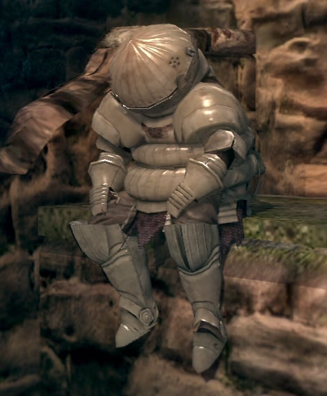

welcome to my awesome site
it is very accessible
pufferfish:
Tetraodontidae is a family of primarily marine and estuarine fish of the order Tetraodontiformes. The family includes many familiar species variously called pufferfish, puffers, balloonfish, blowfish, blowers, blowies, bubblefish, globefish, swellfish, toadfish, toadies, toadle, honey toads, sugar toads, and sea squab.[1] They are morphologically similar to the closely related porcupinefish, which have large external spines (unlike the thinner, hidden spines of the Tetraodontidae, which are only visible when the fish have puffed up).

katakuri
Charlotte Katakuri is the second son and third child of the Charlotte Family[3] and the elder triplet brother of Daifuku and Oven.[5] He is also one of the Three Sweet Commanders of the Big Mom Pirates[4] and serves as Totto Land's Minister of Flour (粉大臣, Kona Daijin?), governing over Komugi Island.[5] Due to his actions and role, Katakuri is the secondary antagonist in the second half of the Whole Cake Island Arc. He, alongside his younger siblings Charlotte Brûlée and Oven, become temporary allies of the Red Hair Pirates and the Straw Hat Pirates during One Piece Film: Red.

onion knight
Siegmeyer of Catarina is a character in Dark Souls.The character was revealed in the product announcement. A knight swearing allegiance to an unidentified order of warriors, this NPC can occasionally assist the player in various points in the game. It is possible for this older gentleman knight to die in the course of aiding you, so be careful. Siegmeyer can first be found sitting outside the entrance to Sen's Fortress, notifying the player that the gates are sealed shut. His armor set can be bought from the Crestfallen Merchant in Sen's fortress for 34,000 souls (10,000 for helm and chest armor and 7000 for the leggings and gloves). He is the father of Sieglinde of Catarina.
